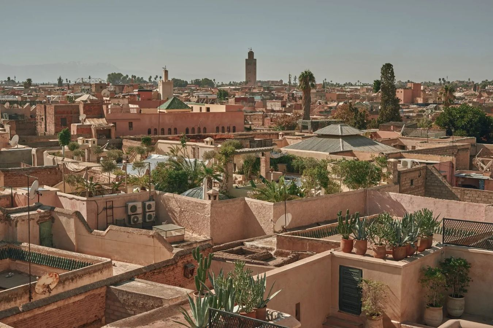

馬拉喀什建立於1062年，由阿爾摩拉維德王朝的蘇丹優素福·本·塔什芬下令修建。城市名稱"馬拉喀什"可能源自柏柏爾語，意為"神之土地"。
在阿爾摩哈德王朝時期（12世紀），馬拉喀什成為帝國首都，達到了鼎盛時期。這一時期修建了庫圖比亞清真寺和許多重要的宮殿與花園。
16世紀的薩阿迪王朝為馬拉喀什帶來了文藝復興，修建了精美的陵墓和宮殿，包括著名的薩阿迪王朝陵墓和巴迪皇宮。
1912年，摩洛哥成為法國保護國，馬拉喀什在法國總督統治下經歷了現代化進程。1956年摩洛哥獨立後，馬拉喀什逐漸發展成為國際旅遊勝地，1985年麥地那老城被聯合國教科文組織列為世界遺產。
